Graphic Production Portfolio
This project was developed in an academic context of Graphic Production, in Instituto Politécnico do Cávado e do Ave. The objective was to create a portfolio, documenting about the study visits that the class made to six companies that works with the printing of the design works, like books and newspaper. This portfolio has six books, each one documenting one company, fitting in a folder, which makes the organization and reading more pratical.
 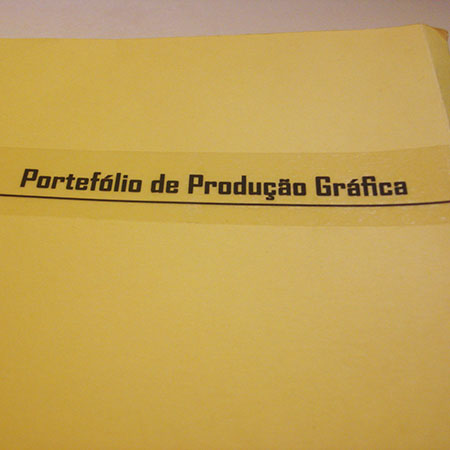
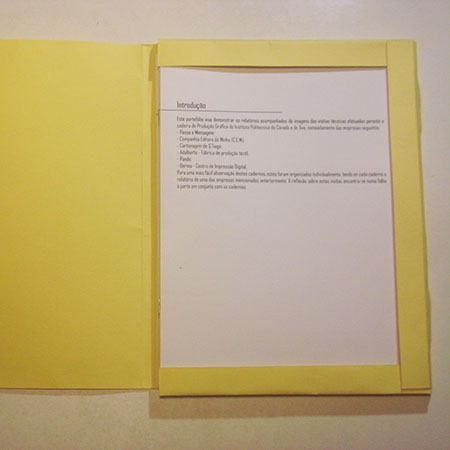
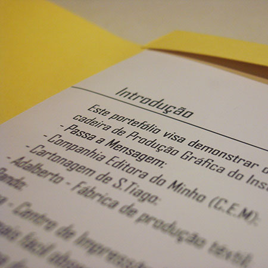
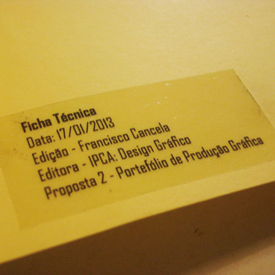
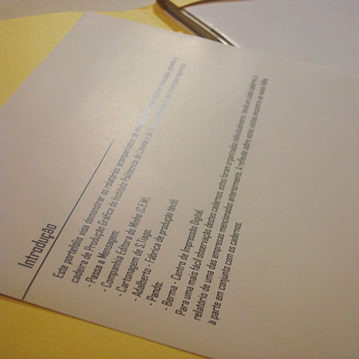
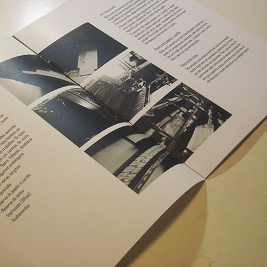
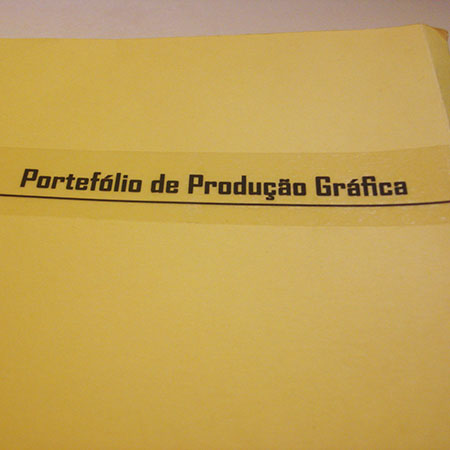
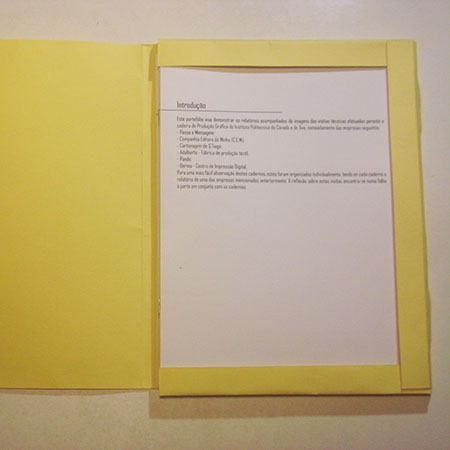
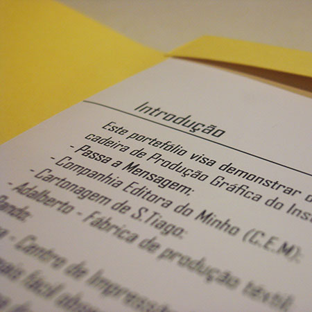
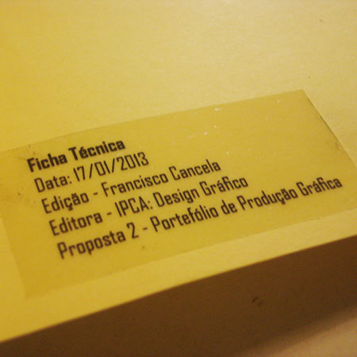
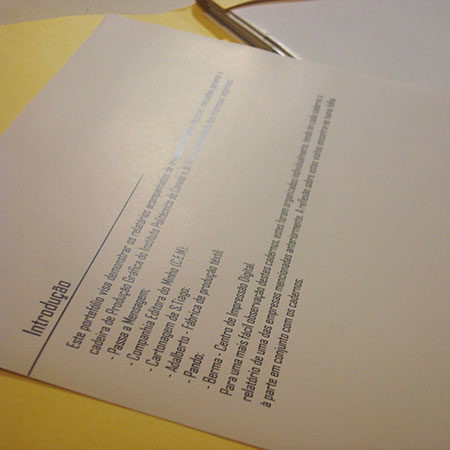
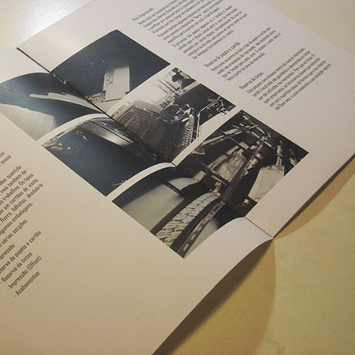